Journal Week 35
Table of Contents
Referencias
2026-08-24
Ya está montada la rampa con una de las paredes y estoy haceindo pruebas con el motor y la paleta más chica. Tareas pendientes:
- Hacer separadores que se agarren a la pared de acrílico y/o a perfil.
- Poner gráficos en un ppt para discutir.
- Mandar a imprimir una rampa de otra pendiente.
2026-08-25
A continuación una serie de la evolución de la ola (con la paleta chica, tanh(t) de subida y bajada, de amplitud de 10 cm, subiida de 1 s y duración total de 15 s, con \(\alpha\) de 50e-3).
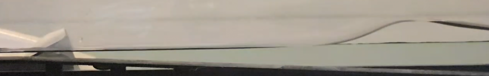
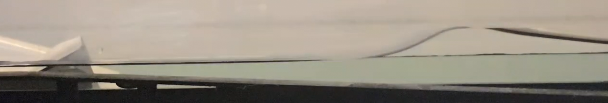
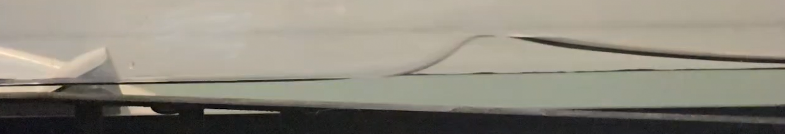
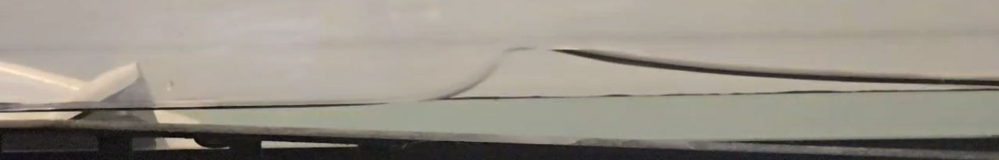
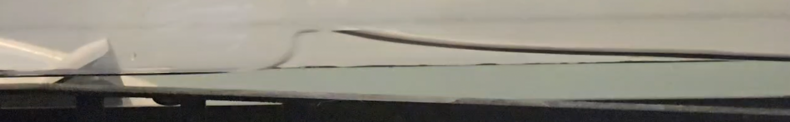
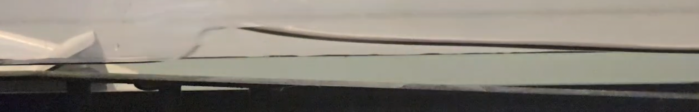
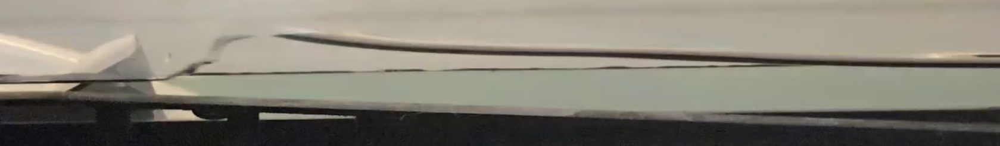
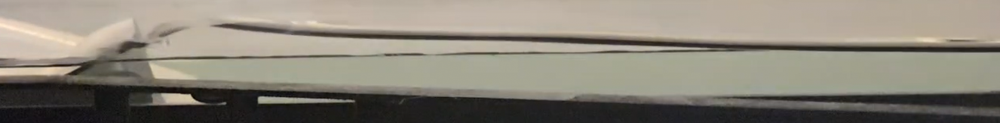
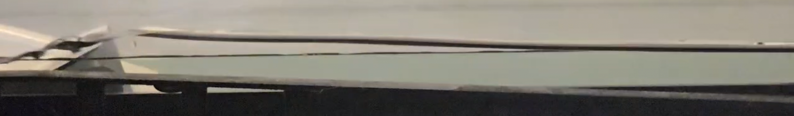
2026-08-27
[09:28]
Acá dejo las funciones de estructura calculadas y la kurtosis.
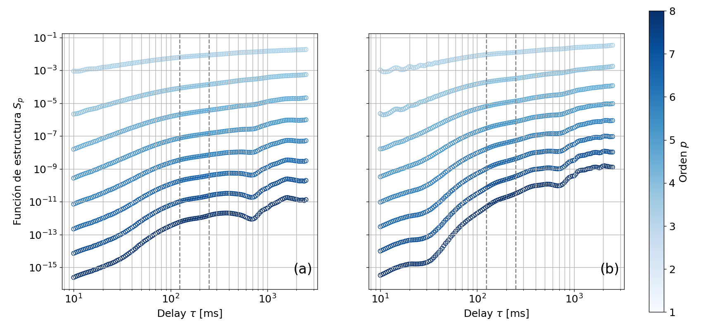
Y la kurtosis:
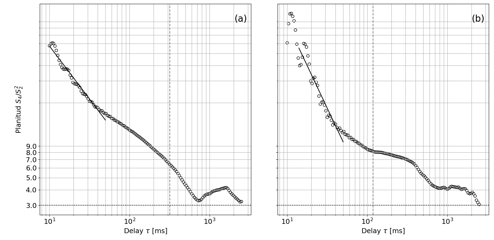